Gravitational wave predictions for Standard Model extensions using the Sound Shell Model
Mika Mäki, Doctoral Researcher
Computational Field Theory group, University of Helsinki
Strong and Electro-Weak Matter 2026
19.8.2026
In collaboration with David Weir, Mark Hindmarsh, Deanna Hooper & Lorenzo Giombi
Phase transitions in the early universe
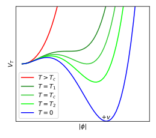
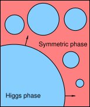
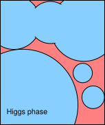
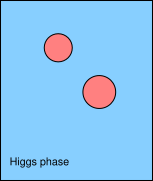
- First-order: potential barrier
⇒ phase boundary ⇒ bubble nucleation - SM Higgs: crossover, BSM Higgs: first-order
⇒ Observational constraints of BSM theories
How to calculate the GW spectrum for a BSM theory?
- Lattice simulations
- Capture multiple types of effects: bubble expansion, collision and turbulence
- Computationally expensive
- Analytical approximations
- Broken power law, double broken power law
- Useful but rather crude approximations
- Semi-analytical approximation: Sound Shell Model
- Captures dependence on phase transition parameters
- Reproduces the results of lattice simulations for intermediate-strength transitions
- This is what we are working on
Self-similar fluid shells
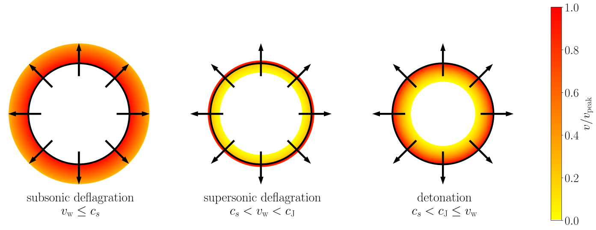
Hindmarsh et al. (2021,
arXiv:2008.09136),
hybrids discovered by Kurki-Suonio & Laine (1995,
arXiv:hep-ph/9501216)
Friction → constant $v_\text{wall}$ → self-similar solution
Three types of solutions, determined by
Three types of solutions, determined by
- Wall velocity $v_\text{wall}$
- Transition strength $\alpha_n$
- Speed of sound $c_s(T,\phi)$
Explanation of the figure
- Black circle: phase boundary, aka. bubble wall
- Colour: velocity of moving plasma
- $c_s$: speed of sound
- $v_\text{w}$: wall speed
- $c_\text{J}$: Chapman-Jouguet speed
Sound Shell Model
- Hindmarsh (2018, arXiv:1608.04735), Hindmarsh & Hijazi (2019, arXiv: 1909.10040)
- Sound waves are the majority contribution when the transition strength $\alpha_n < 1$ and $v_\text{wall} < 1$
→ Collisions and turbulence can be neglected → no interaction between the bubbles
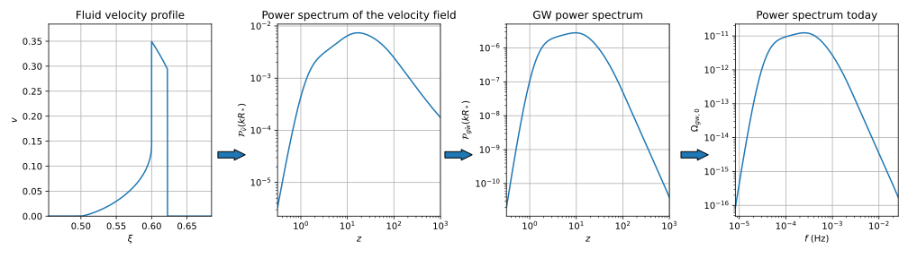
From fluid profiles to GW spectra
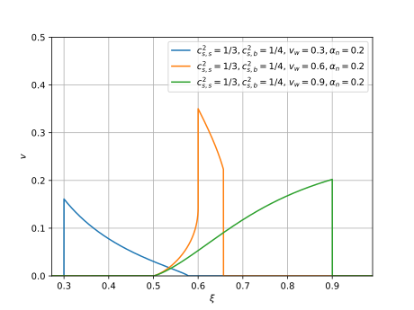
⮕

Fluid shell velocity profiles
- Boundary conditions
- ODE integration
-
Equations of state beyond the bag model:
Mäki (2025, arXiv:2511.20436)
GW spectra
- Sound Shell Model: sine transform etc.
- Low-frequency tail
- Correction factors
- Conversion to observable $\Omega_{\text{gw},0}(f)$
Comparison with lattice results for $\dot{\mathcal{P}}_\text{gw}$
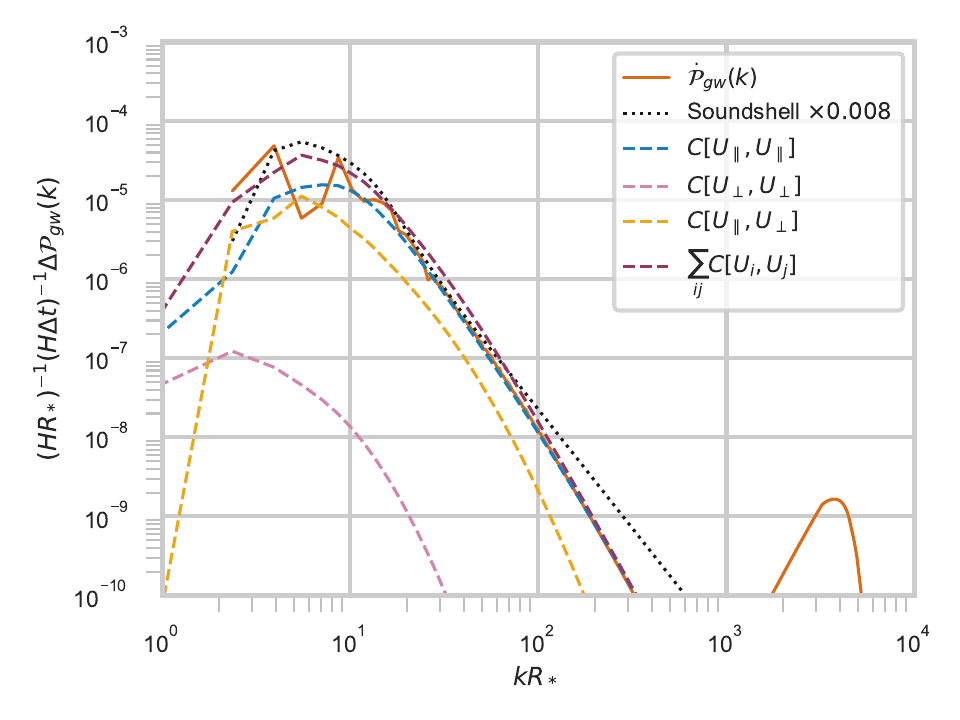
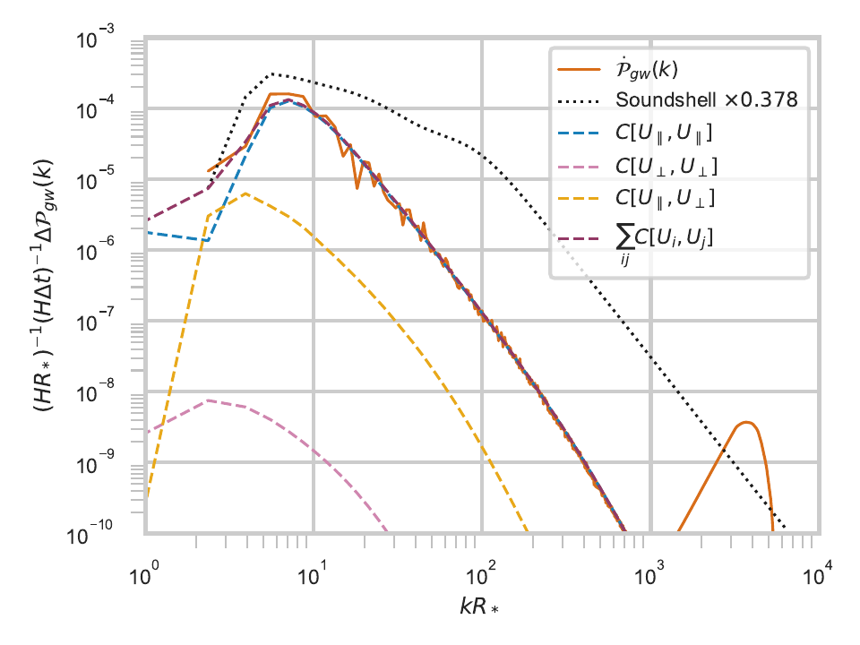
Deflagration $(\alpha_n = 0.5, v_\text{wall} = 0.44)$
Detonation $(\alpha_n = 0.67, v_\text{wall} = 0.92)$
- SSM is matched to the lattice results with a phenomenological suppression factor
-
Deflagration is a better match
- (The orange peak on the right is a lattice artifact)
- Correia et al. (2025, arXiv:2505.17824)
Equations of state
- Equation of state for an ultrarelativistic plasma with multiple degrees of freedom $$p(T,\phi) = \frac{\pi^2}{90} g_p(T,\phi) T^4 - V(T,\phi)$$
-
The rest can be deduced with thermodynamics
-
Entropy density $s = \frac{dp}{dT}$,
enthalpy density $w = Ts$,
energy density $e = w - p$, sound speed $c_s \equiv \sqrt{\frac{dp}{de}}$
-
Entropy density $s = \frac{dp}{dT}$,
enthalpy density $w = Ts$,
- Bag model: equation of state with constant degrees of freedom $$p_\pm = a_\pm T^4 - V_\pm \quad \Rightarrow \quad c_s^2 \equiv \frac{dp}{de} = \frac{1}{3}$$
-
Constant sound speed model
(aka. $\mu, \nu$ model or template model, arXiv:2004.06995, arXiv:2010.09744) $$p_\pm = a_\pm \left( \frac{T}{T_0} \right)^{\mu_\pm - 4} T^4 - V_\pm {\color{gray} \approx a_\pm T^{\mu_\pm} - V_\pm } \quad \Rightarrow \quad c_{s\pm}^2 = \frac{1}{\mu_\pm - 1}$$ -
From an arbitrary particle physics model: $g_p(T,\phi), \ V(T,\phi)$
- This can also be done with e.g. WallGo (arXiv:2411.04970)
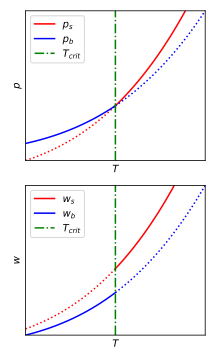
Effects of varying the sound speed $c_s$
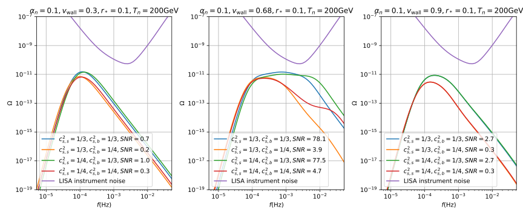
Deflagration
Hybrid
Detonation
Calibration with 4D hydrodynamic lattice simulations
- Gowling & Hindmarsh (2021, arXiv:2106.05984)
- For most parameter combinations, the Sound Shell Model gives a relatively good approximation for the shape of the GW spectrum but over-estimates the amplitude
- Solution: suppression factor $\Sigma(v_\text{wall},\alpha_n)$ $$\mathcal{P}_\text{gw} = \Sigma(v_\text{wall},\alpha_n) \mathcal{P}_\text{gw}^\text{ssm}$$
- For deflagrations and hybrids around $(v_\text{wall} \approx c_s, \ \alpha_n \approx 0.05) \ \Rightarrow \ \Sigma \approx 1$
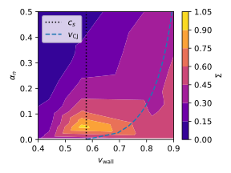
Suppression factor $\Sigma(v_\text{wall}, \alpha_n)$Thermal suppression of bubble nucleation
- Ajmi & Hindmarsh (2022, arXiv:2205.04097)
- Deflagrations heat the plasma outside the bubble wall
→ Suppression of bubble nucleation - Bubble spacing enlargement factor $\Lambda$ $$R_* = \Lambda(\beta) R_{*,0}$$
-
Fewer bubbles → bubbles grow larger before colliding
→ GW enhancement factor $E_\text{gw}$
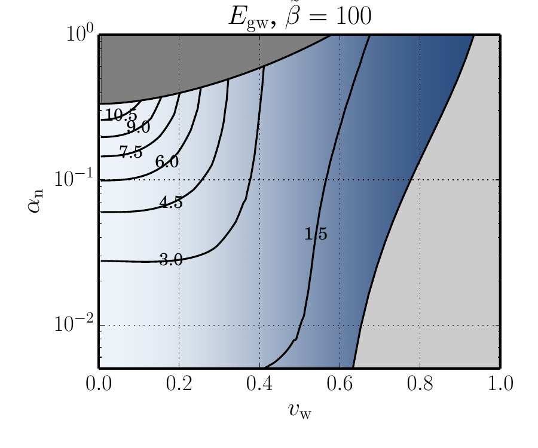
GW enhancement factor $E_\text{gw}$Finite lifetime of the acoustic source
- Giombi et al. (2024, arXiv:2409.01426), (2026, arXiv:2504.08037)
- Acoustic source duration $\frac{\Delta \eta_\text{v}}{\eta_*}$ → source lifetime factor $\Upsilon$
Auxiliary quantities
$$\begin{align}
\ell(\nu) &= 1 + 2\nu \\
\omega(T,\phi) &\equiv \frac{p(T,\phi)}{e(T,\phi)} \\
\omega_\text{bag} &= \frac{1}{3} \ \Rightarrow \ \nu_\text{bag} = 0
\end{align}$$
Low-frequency tail of the GW spectrum
- Giombi et al. (2024, arXiv:2409.01426), (2026, arXiv:2504.08037)
- Green's function oscillating at different timescales
- Sound Shell Model (2019): $\Delta_\text{high} \propto \delta(z - c_s(x + \tilde{x})) \ \rightarrow \ k^9, \ k^{-3}$
- Low frequencies: $\Delta_\text{low} \ \rightarrow \ k^3$ (causality)
- Intermediate frequencies: $\Delta_\text{int} \ \rightarrow \ k^1$
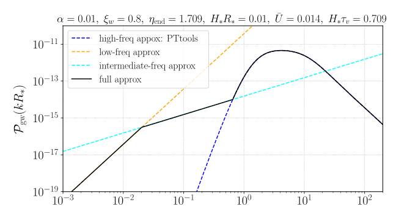
Signal-to-noise ratio (SNR) with improved modeling
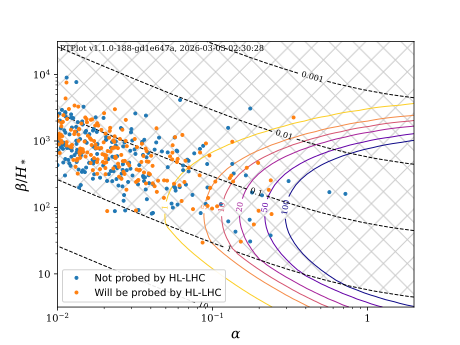
Broken power law (BPL)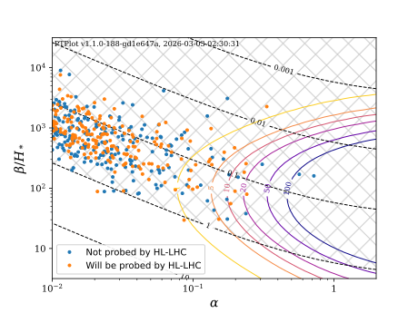
Double broken power law (DBPL)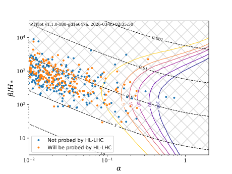
Sound Shell Model (SSM)-
Example particle physics model: Singlet scalar
$$
\Delta V = b_1 S
+ \frac{1}{2} b_2 S^2
+ \frac{1}{2} a_1 S \left| H \right|^2
+ \frac{1}{2} a_2 S^2 \left| H \right|^2
+ \frac{1}{3} b_3 S^3
+ \frac{1}{4} b_4 S^4
$$
-
SM extended with a general real singlet scalar field $S$
- SNR curves plotted with $v_\text{wall} = 0.95, \ T_* = 50.0 \ \text{GeV}, \ g_* = 107.75$
- Example points sampled from the parameter space of the model
-
Only some of the points will be probed by HL-LHC
→ LISA complements laboratory experiments
-
SM extended with a general real singlet scalar field $S$
- Significant change in the shape of the SNR curves with improved modeling
Summary
-
Sound Shell Model improves the power spectrum and SNR accuracy compared to broken power laws, while maintaining computational efficiency
- More detailed dependence on the phase transition parameters
-
Sound Shell Model has been extended to account for additional key physical effects
- Temperature and phase dependence of the equation of state and the sound speed
- Thermal suppression of bubble nucleation
- Finite lifetime of the acoustic source
- Low-frequency tail of the spectrum
-
The Sound Shell Model is available with:
- PTtools: https://pttools.readthedocs.io
- PTPlot: https://www.ptplot.org
Thank you!
PTtools & PTPlot
-
PTtools
- Simulation framework (Python library), doi:10.5281/zenodo.15268219
- Based on the Sound Shell Model by Hindmarsh et al.
- Included in LISA ProtoLab
-
PTPlot
- Online plotting utility (Django web app), arXiv:1910.13125
- Supports several models for the GW spectrum: broken power law (BPL), double-broken power law (DBPL), Sound Shell Model (SSM) (in development)
-
Input
- Equation of state: $p(T,\phi) = \frac{\pi^2}{90} g_p(T,\phi) T^4 - V(T,\phi)$
- Wall speed $v_\text{wall}$ (computed e.g. with WallGo)
- Transition strength parameter $\alpha_n \equiv \frac{4D\theta(T_n)}{3w_n} = \frac{4}{3} \frac{\theta_+(T_n) - \theta_-(T_n)}{w_n}$
- Nucleation rate parameter $\tilde{\beta} = \frac{\beta}{H_*}$
-
Output:
- GW power spectrum today $\Omega_{\text{gw},0}(f)$
- Signal-to-noise ratio (SNR) plots
- Use case: estimate the likelihood of various Standard Model extensions with LISA data
How to use PTtools
How to generate the figures on the previous slide
pip install pttools-gw
from pttools.analysis import plot_spectra_omgw0, plot_bubbles_v
from pttools.bubble import Bubble
from pttools.models import ConstCSModel
from pttools.omgw0 import Spectrum
alpha_n = 0.2
model = ConstCSModel(css2=1/3, csb2=1/4, alpha_n_min=alpha_n)
bubbles = [
Bubble(model, v_wall=0.3, alpha_n=alpha_n),
Bubble(model, v_wall=0.5, alpha_n=alpha_n),
Bubble(model, v_wall=0.9, alpha_n=alpha_n)
]
spectra = [Spectrum(bubble, r_star=0.1, Tn=200) for bubble in bubbles]
plot_bubbles_v(bubbles, path="bubbles.svg", v_max=0.5)
plot_spectra_omgw0(spectra, path="spectra.svg")
Fluid velocity profiles
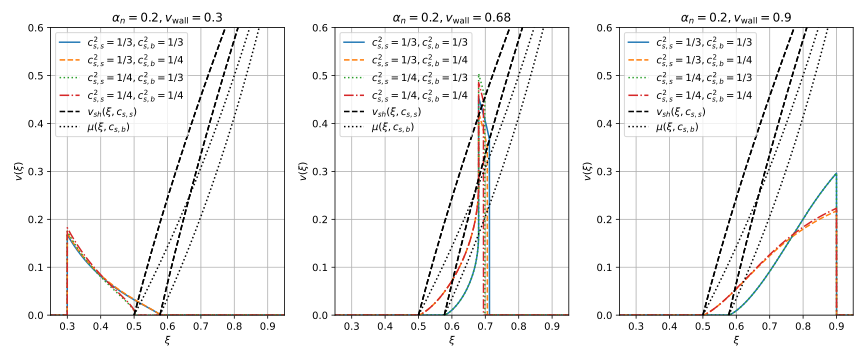
GW power spectra
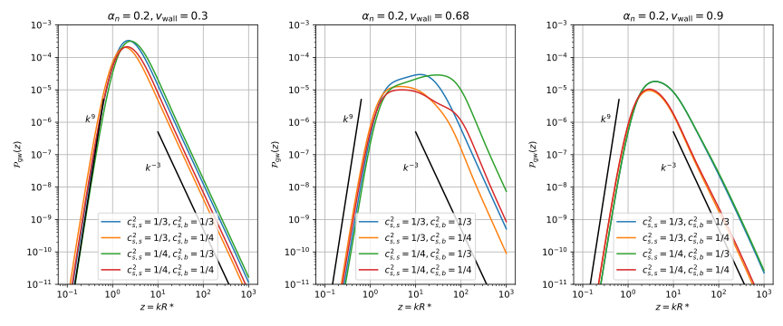
GW power spectra today
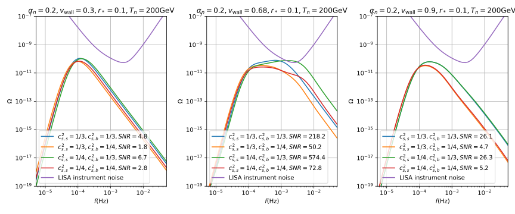
Fluid shell algorithm: detonations
-
Solve boundary conditions at the wall for known $w_+=w_n, v_+=0$
- Using user-provided $p(T,\phi)$ → numerical solving
-
Integrate from the wall to the fixed point at $v=0$
- Using $c_s^2(w,\phi)$ based on user-provided functions → numerical ODE integration
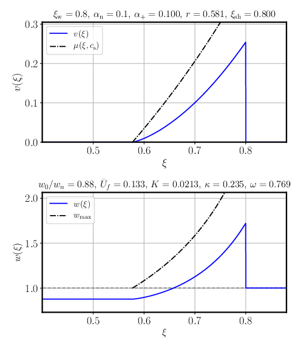
Fluid shell algorithm: deflagrations
- Guess $w_-$, the enthalpy behind the wall
- Solve boundary conditions at the wall for $w_+, v_+$
-
Integrate to the shock
- $v_{sh}(\xi)$ is computed from the boundary conditions → has to be found numerically
- Solve boundary conditions at the shock
- Check if $w=w_n$
- If not, change the enthalpy guess and try again
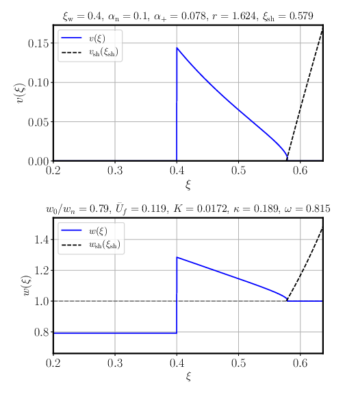
Fluid shell algorithm: hybrids
- The same as for subsonic deflagrations, but with an additional integration behind the wall
- Guess $w_-$, the enthalpy behind the wall
- Solve boundary conditions at the wall for $w_+, v_+$
- Integrate to the shock
- Solve boundary conditions at the shock
- Check if $w=w_n$
- If not, change the enthalpy guess and try again
- Once the correct enthalpy has been found, integrate from the wall to the fixed point at $v=0$
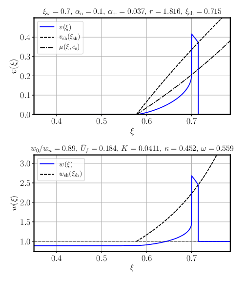
Wave equation
- Constant background space-time → energy-momentum conservation $\nabla_\mu T^{\mu\nu} = 0$
- Energy-momentum tensor of an ideal fluid $$T^{\mu \nu}_f = (e+p) u^\mu u^\nu + p g^{\mu \nu}$$
- For a one-dimensional flow in Cartesian coordinates $$\begin{align} \partial_t \left[ (e+pv^2) \gamma^2 \right] + \partial_x \left[ (e+p) \gamma^2 v \right] &= 0, \label{eq:ep_conservation_1d_1} \\ \partial_t \left[ (e+p) \gamma^2 v \right] + \partial_x \left[ (ev^2 + p) \gamma^2 \right] &= 0 \label{eq:ep_conservation_1d_2} \end{align}$$
- First-order perturbation → wave equation with a speed of sound $$\partial_t^2 (\delta e) - \frac{\delta p}{\delta e} \partial_x^2(\delta e) = 0 \qquad c_s^2 \equiv \frac{dp}{de} = \frac{dp/dT}{de/dT}$$
Phase boundary
- Energy-momentum conservation $$\nabla_\mu T^{\mu\nu} = 0 \quad \Rightarrow \quad \partial_z T^{zz} = \partial_z T^{z0} = 0$$
- Inserting ideal fluid $T^{\mu \nu}_f = (e+p) u^\mu u^\nu + p g^{\mu \nu}$ → junction conditions $$\begin{align} w_- \tilde{\gamma}_-^2 \tilde{v}_- &= w_+ \tilde{\gamma}_+^2 \tilde{v}_+ \label{eq:junction_condition_1} \\ w_- \tilde{\gamma}_-^2 \tilde{v}_-^2 + p_- &= w_+ \tilde{\gamma}_+^2 \tilde{v}_+^2 + p_+ \label{eq:junction_condition_2} \end{align}$$
- By defining new variables $\theta = \frac{1}{4}(e-3p), \quad \textcolor{red}{\alpha_+} \equiv \frac{4}{3} \frac{\theta_+(w_+) - \theta_-(w_-)}{w_+}$ $$\begin{align} \tilde{v}_+ &= \frac{1}{2(1+\textcolor{red}{\alpha_+})}\left[ \left(\frac{1}{3\tilde{v}_-}+\tilde{v}_-\right) \pm \sqrt{\left(\frac{1}{3\tilde{v}_-} - \tilde{v}_- \right)^2 + 4\textcolor{red}{\alpha_+}^2 + \frac{8}{3} \textcolor{red}{\alpha_+}} \right], \label{eq:v_tilde_plus} \\ \tilde{v}_- &= \frac{1}{2} \left[ \left( (1+\textcolor{red}{\alpha_+})\tilde{v}_+ + \frac{1-3\textcolor{red}{\alpha_+}}{3\tilde{v}_+} \right) \pm \sqrt{\left((1+\textcolor{red}{\alpha_+})\tilde{v}_+ + \frac{1-3\textcolor{red}{\alpha_+}}{3\tilde{v}_+} \right)^2 - \frac{4}{3}} \right]. \label{eq:v_tilde_minus} \end{align}$$
Hydrodynamic equations
- Energy-momentum conservation $\nabla_\mu T^{\mu\nu} = 0$
- Projection → hydrodynamic equations away from the phase boundary $$\begin{align} 0 &= u_\mu \partial_\nu T^{\mu \nu} = -\partial_\mu (w u^\mu) + u^\mu \partial_\mu p, \\ 0 &= \bar{u}_\mu \partial_\nu T^{\mu \nu} = w \bar{u}^\nu u^\mu \partial_\mu u_\nu + \bar{u}^\mu \partial_\mu p. \end{align}$$
- Using self-similarity $\xi = \frac{r}{t}$ and parametrising $$\begin{align} \frac{d\xi}{d\tau} &= \xi \left[ (\xi - v)^2 - c_s^2 (1 - \xi v)^2 \right], \\ \frac{dv}{d\tau} &= 2 v c_s^2 (1 - v^2) (1 - \xi v), \\ \frac{dw}{d\tau} &= w \left( 1 + \frac{1}{c_s^2} \right) \gamma^2 \mu \frac{dv}{d\tau}. \end{align}$$
- Note that $c_s^2$ is computed using user-provided functions